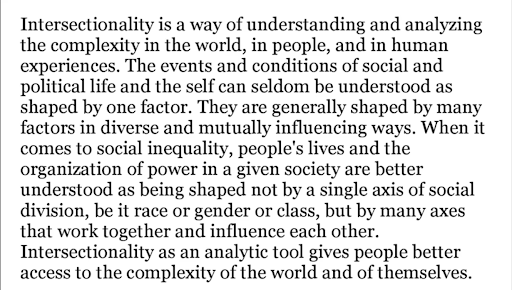
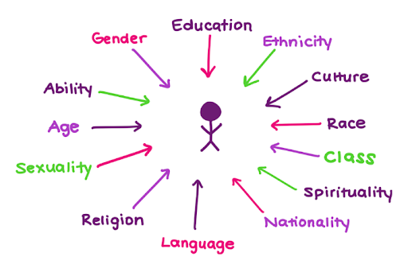
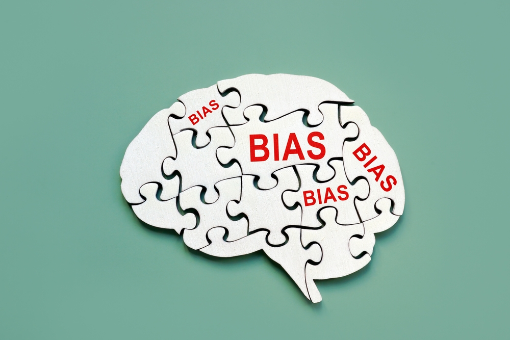
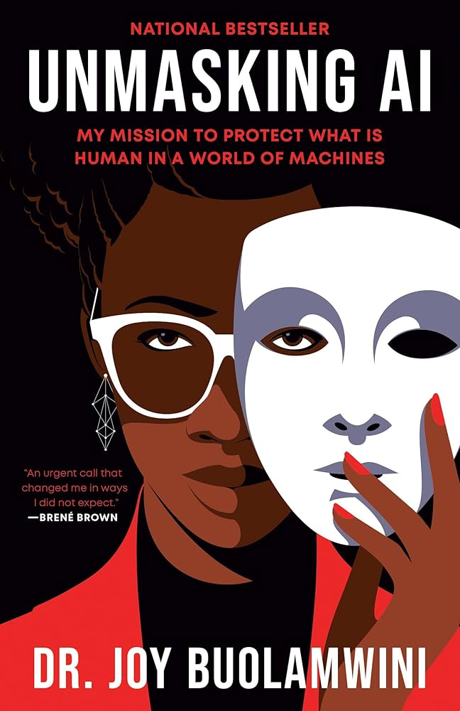

Intersectionality was first coined by Kimberle Crenshaw in 1989, defined as “a prism for seeing the way in which various forms of inequality often operate together and exacerbate each other (Schnaw)”. It acknowledges the fact that a one-size-fits-all approach is rarely sufficient to fully understand or address inequalities. For example, not only do women experience inequality differently from people of color, but POC women likely have a different experience entirely. Examining discrimination from one lens at a time doesn’t fully address overlapping identities or capture the full scope of the problem. An intersectional approach recognizes that context matters, identity is complex, and power structures can create overlapping forms of oppression and privilege (Collins). Adopting an intersectional approach can be a powerful tool in improving social justice efforts and motivating social change. It helps ensure people of all identities, especially that overlap, have their experiences validated and improved in a meaningful way (Collins).

Applying an intersectional lens to the tech field can help ensure people of all identities are respected and included. For example, diversity initiatives in the STEM field have typically focused on women. While this initially appears to be an improvement – the tech field is historically male – these initiatives tend to be tailored towards white women. This “colorless diversity” indirectly alienates women of color (EricaJoy). A historical semiconductor production plant on a Navajo reservation exemplifies a similar faux-inclusive tech initiative. Production labor was largely performed by Navajo women under the company’s guise of marrying tradition and technology. While this looks like inclusion at first glance, it ignores the larger power factors at play – the dichotomy between male-dominated company leadership and those performing the labor. Intersectionality means looking at the intersections of power structures, race, and gender, not just a single identity (Nakamura).

Implicit bias refers to “the automatic associations and mental shortcuts that shape perception and judgment outside of conscious awareness”. Implicit bias is often used to refer to unconscious stereotypes or prejudices that may be held against marginalized groups. The term “iceberg” is often used to represent how discriminatory thoughts and perceptions may lurk under the surface even if these are not in alignment with an individual’s values (Project Implicit). Biases can “often affect behavior that leads to unequal treatment of people based on race, ethnicity, gender identity, sexual orientation, age, disability, health status, and other characteristics” (Shah).
Testing for implicit bias can help bring awareness to unconscious prejudices and, subsequently, reduce discriminatory behaviors. Harvard’s Implicit Association Tests provide one way to “[help] people better understand how human thinking operates, often outside of conscious awareness” by offering bias tests for a variety of marginalized identities (Project Implicit). Some studies show that improved awareness of implicit bias via testing doesn’t result in reduced biases. Gathering evidence that biases are incorrect could be more effective (Mason).

While algorithms and AI are often perceived as neutral, these initiatives are still developed by inherently biased humans. Developer prejudices are inevitably baked into the code itself. If AI training data is biased, this results in biased AI deliverables. Tech can instead amplify existing inequalities, leading to inequitable outcomes for marginalized groups (Buolamwini). For example, tech activist Joy Buolamwini has done extensive research on bias in AI facial recognition technology, discovering it performs significantly worse for dark-skinned women. This can lead to misidentification and exacerbate discrimination against women of color (Buolamwini).